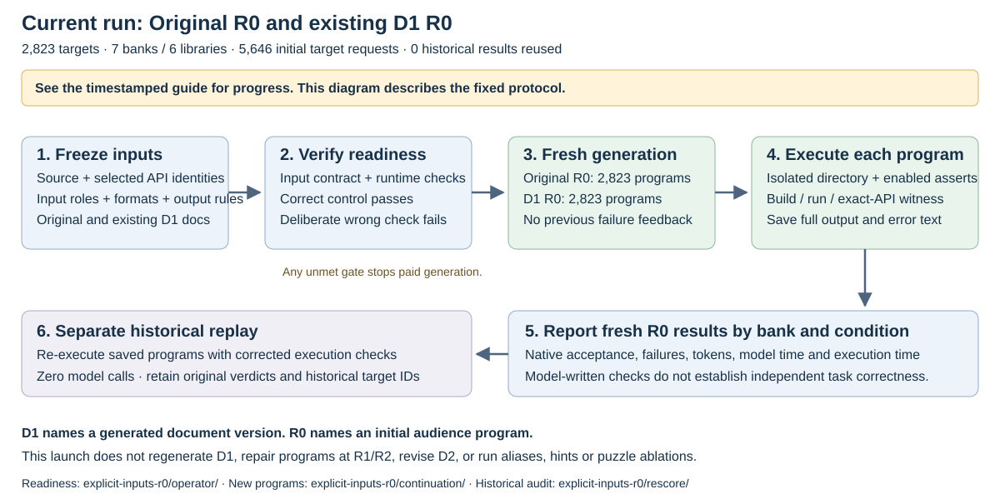
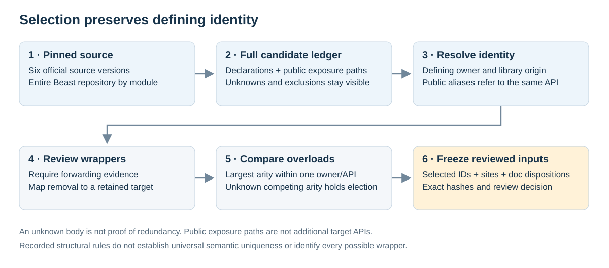
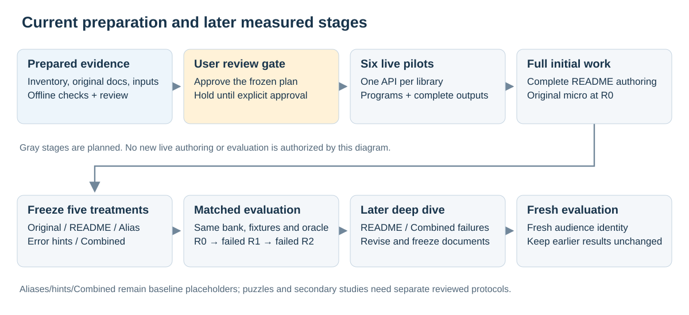

AIDEAL experiment guide
Updated November 18, 2026. Current launch: fresh Original R0 and existing generated README D1 at R0. There are 2,823 targets, zero eligible historical results for reuse, and 5,646 planned initial target requests. Provider retries can add requests. D1 has not been regenerated by the author-prompt correction. No program repairs or D2 revision are included.
Status: replacement running; results remain preliminary. The reviewed explicit-inputs-r0/ comparison started on November 19 at 00:07:11 UTC after publication and its passed readiness gate. At 00:10:10 UTC, mir_eval Original had 41 responses / 41 executions, and Thumbnailator Original had 39 responses / 39 executions, with zero recorded provider errors. The other five banks were queued. No bank had a completed comparison score in this snapshot.
Replacement launch · Timestamped progress snapshot · Passed readiness · Published input-contract amendment 726bd29. The controller is in the continuation phase. This page records a snapshot; it does not update continuously.
Preserved initial run. The initial run was safely stopped at 23:40:44 UTC on November 18 after confirmed omissions in the shared input contract. It was not a preplanned pilot. Retained diagnostic evidence comprises 103 returned mir_eval responses with 102 executions and 109 Thumbnailator responses with 109 executions; both had zero provider errors. The other five banks made no model calls. These partial records are not completed comparison scores.
The new full-cohort comparison under explicit-inputs-r0/ passed preparation for all seven banks. Fourteen sampled audience prompts match outside the documentation and include each input-contract block once. Forty-five source receipts establish unchanged README files, profiles, scaffolds, manifests, source, data, runtime and model; only context descriptions and the output root change. All banks receive consistent permission to create small deterministic inputs. Three banks additionally clarify file roles, formats or metadata. This avoids attributing input ambiguity to README quality. Paid execution started only after the amended protocol was published and the new readiness gate passed.
Visual guide · Exact launch steps · Recorded status · Complete historical prompts and examples · Evaluation design review
1. Current scope and sequence
| Bank | Selected targets | Initial requests across Original and D1 | Current stage |
|---|---|---|---|
| RDPro Java | 69 | 138 | Queued |
| RDPro Scala | 261 | 522 | Queued |
| MDAnalysis | 1,519 | 3,038 | Queued |
| tslearn | 354 | 708 | Queued |
| mir_eval | 178 | 356 | Original running: 41 responses / 41 executions |
| Thumbnailator | 225 | 450 | Original running: 39 responses / 39 executions |
| SedonaDB | 217 | 434 | Queued |
| Total | 2,823 | 5,646 | Running; no completed bank score |
RDPro covers Raptor and supporting raster types, with Java and Scala reported separately. MDAnalysis now retains 1,519 targets after 19 source-audited exclusions from 1,538. tslearn retains 354 after excluding eight import hooks and forwarding wrappers from 362. The 27 exclusions include the earlier 16 MDAnalysis exclusions plus three exact NumPy/RDKit forwarders and eight tslearn hooks/wrappers. Both conditions use identical revised manifests. Final MDAnalysis exclusions · Final MDAnalysis manifest · Final eight tslearn exclusions · Final tslearn manifest.
Current 2,823 selected API identities · Current bank summary. These identify the active bank; they describe native API usage targets, not fixed independently scored tasks.
The full 2,850-target API/artifact index and saved examples remain historical evidence. They are not the current denominator. The earlier 5,307-target full-Beast preparation is also superseded.

- Freeze the source, target bank, runtime, fixture roles, model settings and permitted context.
- Verify the input/output contract: identify each provided file or variable, its role and format, available metadata and required output rules. Then pass deterministic controls and check that Original/D1 differ only in their intended documentation input.
- Generate a new Original program and a new D1 program for every retained target, with no preceding failure or repair feedback.
- Build and execute each program in its own directory; retain its prompt, code, command, output and verdict.
- Report the two fresh R0 conditions separately by bank.
- Replay saved historical programs under corrected checks as a separate audit with no model calls. Preserve their original verdicts.
R0 means the initial audience program. R1/R2 mean repairs after failures; neither runs here. D1/D2 identify README versions. A provider retry is not a repair, and a fresh independent generation is not R1.
Initial-run preparation and prompt checks. The initial-run readiness receipt passed before the input-contract omissions were discovered. The replacement seven-bank preflight and input-contract equivalence report now pass. The replacement readiness receipt passed and the recorded launch followed publication.
Stopped initial-run evidence
| Bank | Returned responses | Executed programs | Provider errors | Disposition |
|---|---|---|---|---|
| mir_eval Original | 103 | 102 | 0 | Preserved diagnostic evidence |
| Thumbnailator Original | 109 | 109 | 0 | Preserved diagnostic evidence |
| Other five banks | 0 | 0 | 0 | No model calls |
Recorded run amendment. There are 213 saved requests, 212 returned responses and 211 executions. One provider request was interrupted; its token/billing usage is unavailable, not zero. Keep the recorded costs separate as protocol-development cost.
Initial-run launch receipt · Initial-run status snapshot. The stopped status and amendment preserve the original full-run intent and explain why the shared input contract changed. Preserve its costs, responses and errors; do not pool these records with the amended comparison. The input-contract change requires fresh matched requests in both conditions.
2. Final review checklist
| Check | Evidence / status | What it establishes |
|---|---|---|
| Frozen code release | 2026-11-18-corrected-r0-d8ba3815cf95, 146 files verified |
The exact code packaged for cluster execution |
| Offline software tests | 818 tests and 436 subtests passed; final focused suite 124 tests and 92 subtests passed | Tested execution and workflow contracts |
| MDAnalysis setup | 160 defining modules imported; 523 upstream data files; 18 input roles; IMD, Chemfiles and real 3DNA checks passed | Audited data/tool capability, not correctness of every API |
| Seven actual bank preparations | 7/7 replacement banks passed | Selected manifests and condition inputs bind successfully |
| Paired prompt exposure | 14 sampled prompts passed; input blocks appear once | Shared context is consistent and contains no extra condition-specific repair advice |
| Final native controls | 12 non-MD controls and two final-profile MD replay controls passed; six native MD controls bound by equivalence | The final scaffold accepts a known correct example and rejects a deliberately wrong assertion |
| Final source-selection audit | Complete: 27 explicit exclusions | Excludes source-proven runtime hooks/wrappers consistently before the denominator is frozen |
| Input/output contract clarity | Mandatory check passed on the sampled requests | Explicit fixture roles, file formats, available metadata and output rules, shared across Original/D1 without expected-answer leakage |
| Replacement readiness | Passed and published | Bind the amended inputs and all required checks to the new namespace |
| Paid Original/D1 execution | Running; 80 returned responses / 80 executions in the snapshot | No completed bank score; keep initial-run records separate |
MDAnalysis setup review · Final control equivalence · Final MD runtime setup report · Earlier paired control programs and logs · Recorded review status.
Does setup checking need an LLM? No. Imports, file hashes, compilation, tool availability, fixture parsing and deliberate positive/negative checks give reproducible evidence. An LLM can help diagnose a failed check or propose a repair. It must not decide that the environment passes without executing and recording those checks. A missing dependency does not count as a successful deliberately failing control. Passing imports and sample executions also does not establish that the audience received a clear input contract; both checks are mandatory.
3. What the comparison measures
The current run measures native execution acceptance under original versus generated documentation. The audience chooses a usage example and writes its own checks. Exit success and an exact-API witness are stronger than an unchecked process return, but they do not independently establish task correctness or prove that the target operation performed the intended work.
| Claim | Needed evidence | Current scope |
|---|---|---|
| Setup works for audited inputs | Bound runtime, fixture/tool checks, correct and deliberately wrong controls | Runtime controls and sampled input-contract checks passed; replacement running |
| A generated program was accepted | Full executed code, exit status and exact-API witness | Measured by this native R0 comparison |
| A program solves a fixed task correctly | Independently specified expected outputs and target-use verification | Not established by native self-checks |
| Generated documentation caused a measured difference | Matched tasks, settings and exposure, repeated trials and independent checks | Current results are diagnostic; one native R0 program per target is limited evidence |
| Aliases, hints and their interactions help | Validated treatments and matched factorial runs | Separate later study |
| Deep-dive README repair generalizes | Development/evaluation separation and fresh held-out tasks | D2 deferred |
Keep per-library results separate. A pooled percentage would give MDAnalysis much more weight because its bank is larger. Report documented versus no-reviewed-API-excerpt strata where the mapping exists. Do not convert setup errors into API/model failures without diagnosis. Conversely, an upstream library bug is not a setup fault. Classify it from source and reproducible execution evidence instead of changing the environment until the program passes.
The later paper design includes eight factor combinations, O, R, A, H, RA, RH, AH, RAH, with microbenchmarks and puzzles, R0/R2, and separate D2 follow-ups. Those are planned measurements, not outputs of this launch. The current generic condition runner does not by itself implement the complete eight-arm design. Cross-task learned error memory must be disabled, isolated, or frozen to development-only evidence for held-out evaluation. Detailed design review.
4. Inputs, prompts and one-target review
The new source-bound context describes supplied objects and permissions. It does not add API failure diagnoses or corrective hints to the Original condition. Both conditions receive the same contract.
| Bank | Clarified shared input contract |
|---|---|
| Thumbnailator | Distinguish an empty output buffer, an output filename and an output directory. |
| mir_eval | State supplied file columns, units and limited toy-data roles; permit suitable deterministic inputs for other formats. |
| RDPro Java | State existing raster/HDF facts and distinguish them from synthetic metadata supplied by the scaffold. |
| All seven banks | Permit small deterministic task-suitable inputs under the isolated output directory. |
Exact contracts and source evidence · Verified unchanged inputs. These checks establish the described exposure, not independent correctness of every future program.
| Stage | Model input | Model output / retained evidence |
|---|---|---|
| Original R0 | Exact API identity/declaration, public access facts, reviewed original docs, shared execution context and input roles | Initial program, provider response and usage, executed scaffold, command and stdout/stderr |
| Existing D1 R0 | Same target and shared setup, with the existing generated API entry | Separate initial program and the same execution evidence |
| Historical README authoring | Project profile, API/source facts, document context and available examples | Existing D1 entries plus saved author requests/responses |
| Historical saved-program replay | No model request | New execution evidence linked to the unchanged saved program and its historical verdict |
Canonical API declarations/public access facts are shared across the audience conditions. Author diagnosis source windows are not part of ordinary audience exposure. The historical author prompt had invalid qualified-ID call examples; future authoring is corrected, but this does not retroactively fix existing D1. Neutral profile/context corrections affect the upcoming audience calls and invalidate historical prompt reuse.
Open the complete historical paired examples. For each target:
- Read its manifest identity and source/document mappings.
- Read the full
request.jsonsystem/user text, not a displayed excerpt. - Compare
response.txtwith the program body and full executed scaffold. - Read
execution.jsonfor the exact command, working directory, timeout and exit code. - Read complete
stdout.txtandstderr.txt; summary tails can omit important evidence. - Check the result's identity, selected API, hashes and mode. Distinguish historical generation, setup control, saved replay and a new corrected R0 attempt.
5. Code review route
| Review goal | File and starting line |
|---|---|
| Stage preparation and sequencing | scripts/run_evaluator_correction.py:46 |
| Final readiness gate | scripts/run_evaluator_correction.py:130 |
| Reject changed historical source/docs/data | scripts/run_verified_readme_continuation.py:68 |
| Prepare matched condition inputs | scripts/run_verified_readme_continuation.py:256 |
| Run one fresh condition | scripts/run_verified_readme_continuation.py:439 |
| Native execution verdict | vendor/aideal_engine/src/aideal/native_execution_contract.py:141 |
| Scoped runtime readiness | workflow/runtime_profile.py:126 |
| Later R0/R1/R2 repair loop | workflow/evaluation_runner.py:78 |
Follow prepare → readiness checks → condition preparation → run_condition → the native executor → aggregate results. The later evaluation_runner.run_unit repair loop is useful to understand R0/R1/R2, but this launch sets zero program repairs.
6. Folders, branches and isolation
2026-11-17-latest-stable-canonical/
EXPERIMENT_GUIDE.md / .html current review entry points
STUDY_LOCK.json pinned library/source identities
evaluator-correction-2026-11-18/
INDEX.html / WORKFLOW.svg current ordered workflow
REVIEW_STATUS.json timestamped review snapshot
README.md exact preparation/launch instructions
review/
prompt-audit/ complete HISTORICAL 2,850-target index
corrected-profiles/ new neutral profiles; old profiles retained
corrected-contexts/ shared context without failure remedies
EVALUATION_DESIGN_REVIEW.md measurement limits and future controls
fixture-development-v1/ reviewed inputs and MD target exclusions
runtime-mdanalysis-final-2026-11-18/
environment hashes and setup report
preflight/ actual programs, outputs and control receipts
explicit-inputs-r0/
operator/ prepared plan, readiness, queue state
continuation/ NEW Original / existing D1 R0 artifacts
rescore/ SEPARATE saved-program replay evidence
qualified*/ historical Original/authoring evidence
ablation-2026-11-18/ historical generated/repair/treatment work
Directories for pending stages may not exist yet. Folder existence alone does not establish completion.
The shared evaluator/review repository is ZhuochengShang/AIDEAL, study branch study/2026-11-17-latest-stable-canonical. The corrected code is published at commit 56a42d9; all 146 public code files match the local and cluster frozen release. Each library repository has refs under that prefix for original, readme-only, alias-only, error-hints-only, and combined. These are resource variants, not R0/R1/R2 rounds. Recorded installation commits identify installed bytes; a branch name does not prove treatment readiness. The later eight-condition paper design also requires explicit pairwise variants and configuration, not merely the five existing names.
Each job pins source and evaluator identities and uses isolated writable directories. Do not change a checkout underneath a running job. A new branch or cluster current pointer cannot silently change an already pinned run. Historical prompts, responses and measured results are evidence; do not delete them as cache.
The former evaluator-correction-2026-11-18/current/ contains unlaunched preparation evidence. fresh-original-d1/ now contains the stopped initial run and its immutable measured history. Its start/readiness receipts describe that earlier attempt and do not authorize a restart. The new active namespace is explicit-inputs-r0/; preparation passed and the published replacement is running. MDAnalysis uses the new metadata-only profile runtime-mdanalysis-final-2026-11-18/; all 3,767 recorded runtime files are unchanged, while selection bindings are updated.
Five disposable Python/pytest cache directories (961,377 bytes) were removed. No measured files or installed dependencies were deleted.
The cluster is the authoritative execution location. Local/GitHub files are review snapshots, not a live mirror of every output write. Mac and Linux dependencies are different even when source files match.
7. Commands and progress checks
Local review / VS Code, with no API key required:
cd /Users/clockorangezoe/Documents/phd_projects/code/geoAI/AIDEAL_WORKSPACE/03_Experiments/2026-11-17-latest-stable-canonical
open EXPERIMENT_GUIDE.html
cd /Users/clockorangezoe/Documents/phd_projects/code/geoAI/AIDEAL_workflow
/Users/clockorangezoe/miniconda3/envs/geo_llm_spark/bin/python \
scripts/trace_original_micro.py --pause
The walkthrough uses scripted model responses and real local execution; it is not a live library comparison or Gemini measurement.
Recorded cluster preparation, without model calls. The replacement job is already running; use the read-only progress check below rather than launching a second queue:
ssh lab
cd /home/zshan011/apps/aideal/studies/2026-11-17-latest-stable-canonical
/home/zshan011/apps/aideal/venv/bin/python \
/home/zshan011/apps/aideal/releases/2026-11-18-corrected-r0-d8ba3815cf95/scripts/run_evaluator_correction.py \
--study "$PWD" \
--output "$PWD/evaluator-correction-2026-11-18/explicit-inputs-r0" \
--runtime-profiles "$PWD/evaluator-correction-2026-11-18/explicit-inputs-r0/operator/RUNTIME_PROFILES.json" \
--input-overrides "$PWD/evaluator-correction-2026-11-18/explicit-inputs-r0/operator/INPUT_OVERRIDES.json" \
--phases continuation rescore
Use the reviewed operator input files and launch instructions. The operator adds --run only after the recorded readiness gate passes and uses the permitted credential path without exposing the key. Check for an existing supervisor before a restart; do not start duplicate queues.
Read progress, from the cluster study folder:
python3 - <<'PY_PROGRESS'
import json
from pathlib import Path
root = Path('evaluator-correction-2026-11-18/explicit-inputs-r0')
for name in ('operator/READINESS.json', 'operator/STATE.json',
'continuation/supervisor/summary.json'):
path = root / name
print('\n' + name)
print(json.dumps(json.loads(path.read_text()), indent=2)
if path.exists() else 'Not recorded yet')
PY_PROGRESS
A completed bank must reconcile selected/completed target counts and preserve per-attempt provider usage. Missing token usage is unknown, not zero. Report initial generation, provider retries and build/run/check time separately. No new corrected result should replace a paper accuracy cell without independent correctness evidence.
8. Preserved earlier snapshot
The collapsed section records the earlier November 18 experiment state, before the execution correction. Its statuses, denominator and old launch commands are historical and must not be used to restart the current run.
Historical 2,850-target results, treatment work and earlier commands
Current results and treatment gates · Full ablation plan · Live-progress snapshot · Original completion proof
1. Historical banks and completed baseline
| Library | Pinned release | Selected targets | Original R0 passes | Generated README entries |
|---|---|---|---|---|
| RDPro / Beast, Raptor and supporting raster types | 0.10.1 | 330 (69 Java + 261 Scala) | 37 | 330 |
| MDAnalysis | 2.11.0 | 1,538 | 612 | 1,538 |
| tslearn | 0.10.0 | 362 | 219 | 362 |
| mir_eval | 0.8.2 | 178 | 128 | 178 |
| Thumbnailator | 0.4.21 | 225 | 104 | 225 |
| SedonaDB | 0.5.0 | 217 SQL targets | 78 | 217 |
| Total | 2,850 | 1,178 | 2,850 |
These are selected qualified API targets, not unique short function names or counts of original-document headings. The current RDPro bank contains 271 methods and 59 concrete constructors. Its reduction is 452 candidate sites − 72 wrappers/adapters − 25 unimplemented bodies − 3 abstract constructors − 15 bodyless methods − 7 additional overloads = 330. Different defining owners remain distinct; overload reduction happens within one owner/API. Imported and inherited-only framework APIs are excluded. Exact RDPro decisions.
The other banks do not yet have an equivalent strict wrapper review. Their completed results retain the original manifests. Do not silently replace their denominators or claim identical filtering. Cross-library selection review.
The earlier RDPro count of 171 came from an older README-based inventory of bare Scala names. Full-Beast 2,787 and intermediate raster counts 422/406 are superseded scopes, not the current run. Count explanation · 171-target historical evidence.
2. Experiment design
| Condition | Documentation supplied | Library changes | Current execution gate |
|---|---|---|---|
| Original | Original documents | None | R0 complete; fresh mir_eval R0–R2 complete |
| README only | Generated per-API entries | None | Six banks complete; MDAnalysis running |
| Alias only | Original + accepted alias descriptions | Validated forwarding aliases | Model proposals running; build/behavior validation required |
| Error Hints only | Original | Validated messages in existing exceptions | mir_eval and MDAnalysis source installed; mir_eval R0–R2 running |
| Combined | Generated entries + same aliases | Same aliases + same native hints | Must contain both accepted source treatments before evaluation |
flowchart TD
A[Pin source, API bank, fixtures, model and execution setup] --> B[Original R0]
A --> C[Author every selected README entry]
C --> D[Generated README R0]
A --> E[Propose forwarding aliases]
B --> F[Classify failures and propose source-embedded hints]
E --> G[Build and validate accepted aliases]
F --> H[Validate trigger, correction, valid call and unrelated error]
G --> I[Freeze separate condition branches and runtimes]
H --> I
D --> J[Matched five-condition R0, R1, R2]
I --> J
J --> K[Deep dive on selected R2 failures]
K --> L[Revised README and fresh evaluation]
R0 is the initial program. R1/R2 are the first and second repairs of a failed program. A passing task stops early. A provider retry is not a repair. Deep dive changes the README and requires a new evaluation identity; it is not R3.
The immediate Generated README comparison uses one trial, zero repairs and gemini-3.1-flash-lite, with the Original per-bank evaluator, source, API identities, fixtures and execution settings. Generated documentation selects a generated API entry instead of an original-document excerpt. Report that selection change as well as the text change.
SedonaDB's registered SQL bank currently lacks a compatible source-alias/native-hint adapter. RDPro, tslearn and Thumbnailator also have no accepted native hint under the current literal-message patcher. These treatment cells remain pending rather than silently becoming unchanged control branches.
The tested repair protocol includes the preceding program and bounded public execution feedback, preserving emitted native hints. The old native repair path can truncate messages and omit the previous program, so its zero-repair checkpoint cannot simply be relabelled R2. The new mir_eval comparison uses fresh R0 responses in all three ready conditions. Do not pool these R0/R2 values with earlier R0-only runs. Alias-only and Combined will require the same repair policy when ready.
The live one-target pilot completed six Gemini calls without provider, infrastructure or truncated-output errors. Both conditions failed through R2; the embedded hint reached R1 correctly but provided no observed final-success benefit in that trial. Pilot outcomes and exact traces.
Alias authoring now continues after a complete rejected response, while retaining the rejection and excluding its code. It reuses previously exposed batches, reviews the remaining APIs once, and pauses on provider/incomplete output. The accepted candidate index is only an input to separate runtime validation. Review rules and counts.
3. Inputs and fairness
| Inspect | Evidence |
|---|---|
| Official sources, versions and public baseline trees | STUDY_LOCK.json |
| Current RDPro targets and exclusions | Strict bank |
| Exact original-document excerpts and mappings | Original-document manifest |
| Other libraries' API inputs | Qualified bank browser; its full-Beast RDPro rows are historical |
| Effective profiles, manifests and scaffolds | Current catalog |
| Generated condition inputs | Seven-bank preflight and each run's GENERATED_LAUNCH.json |
| Actual model exposure and execution | Per-attempt request, response, program, stdout/stderr and result files |
For RDPro, 16 retained implementation identities have reviewed original API context; 314 have no reviewed API-specific match. This is not proof that useful documentation does not exist. Preserve unchanged source text and the source-to-document mapping separately from generated guidance.
Native API microbenchmarks use the existing execution and configured checks; generated assertions are not independent hidden-oracle accuracy. A separately frozen puzzle bank is still a distinct experiment. Original failures used to develop treatments make this a within-bank development comparison; held-out generalization needs separate tasks. Known environment/inventory findings.
4. Source branches and isolation
Shared code and experiment records live on ZhuochengShang/AIDEAL, branch study/2026-11-17-latest-stable-canonical. Each of the six public library repositories uses:
study/2026-11-17-latest-stable-canonical/
original
readme-only
alias-only
error-hints-only
combined
README installation commits and hashes identify the exact bytes. A branch name alone does not prove that a treatment is installed. Later source-installation receipts record new commits. Combined receives the same accepted alias and hint files as their individual conditions, plus the generated README.
Each condition uses an isolated source/runtime location. Never switch or modify the Original checkout beneath a running evaluation. Jobs pin immutable evaluator releases; updating the cluster's current pointer changes future development commands, not already-running jobs. Preserve measured branches and rejected development evidence.
5. Folders and review order
Canonical local study:
/Users/clockorangezoe/Documents/phd_projects/code/geoAI/AIDEAL_WORKSPACE/03_Experiments/2026-11-17-latest-stable-canonical/
Cluster study:
/home/zshan011/apps/aideal/studies/2026-11-17-latest-stable-canonical/
study/
EXPERIMENT_GUIDE.md
review/raptor-scope/ current RDPro bank and original-doc mapping
operator/resume/2026-11-18/ completed Original/authoring verification
operator/ablation/2026-11-18/ plan, queue, checks, progress, branch receipts
qualified/ original Python/SQL results and authoring
qualified-raptor/ corrected JVM results and authoring
qualified-readme-source-note/ completed MDAnalysis authoring recovery
ablation-2026-11-18/
generated-readme-r0/<bank>/ current matched README evaluation
matched-repairs/mir_eval/<condition>/ fresh 178-target R0/R1/R2 comparison
development/aliases-reviewed/ current alias review and accepted candidate index
development/aliases/<bank>/ isolated source attachments
development/aliases-only-proposals/ preserved earlier proposals and rejection records
native-hint-authoring-2026-11-18/ author requests, candidates and paired controls
runtime-conditions/ isolated installed source treatments
The cluster is the authoritative execution location. Local/GitHub records are timestamped review snapshots, not a continuous mirror of every live write. Full model and program traces remain in the cluster output directories until synchronized.
For one Generated README target, read:
GENERATED_LAUNCH.json— input checks and frozen comparison identity.configs/generated_readme.yamlanddocs/LLM_readme.md— active settings and documentation.execution/run_<API-storage-key>/attempt_*/— actual prompt, response, program, output and error.execution/comprehension_progress.jsonl— per-target progress.result.json,REPORT.md,completion.json— final aggregates and completion checks.
Copied configs/aideal.yaml and launch.json are preparation receipts; they do not identify the active Generated condition. Later physical attempt directories can reflect provider retries even when logical program repairs remain zero.
6. Commands
ssh lab
cd /home/zshan011/apps/aideal/studies/2026-11-17-latest-stable-canonical
/home/zshan011/apps/aideal/venv/bin/python operator/ablation/2026-11-18/progress.py
To check the separate repair study from the same cluster folder:
python3 - <<'PY'
import json
from pathlib import Path
base = Path("ablation-2026-11-18/matched-repairs/mir_eval")
for condition in ("original", "generated_readme", "error_hints"):
path = base / condition / "result.json"
if not path.exists():
print(condition, "queued")
continue
result = json.loads(path.read_text())
print(condition, len(result["rows"]), "/", result["selected"],
result["cumulative_passes"], "complete:", result["complete"])
PY
Within each repair output, apis/<identity-hash>/round_00, round_01 and round_02 contain ROUND.json, exact native attempt artifacts and stable-result receipts. ROUND.json.logical_round is authoritative: the reused native single-attempt executor labels its internal request round zero in every outer round. This mapping is recorded explicitly rather than overwriting native evidence.
The existing detached queues already run. If it stops, first inspect its process/lock and failure reason. start_generated.py resumes the same frozen queue; do not start a duplicate while it is active. It uses the permitted credential-file path through the existing supervisor; do not copy the key into configuration or Git.
Review locally in VS Code by opening /Users/clockorangezoe/Documents/phd_projects/code/geoAI/AIDEAL_workflow. Code review route and treatment workflow explain entry points. A Mac execution requires separately prepared local paths and runtime bindings; it cannot resume a cluster checkpoint by copying files.
7. Reporting
For each library and condition report selected/completed targets, R0 success, cumulative success after R1/R2, newly fixed failures per round, unresolved categories, input/output tokens, calls, provider retries, model time and build/run/check time. Separate microbenchmarks from puzzles. Missing or unsupported treatments are not zero scores.
Native-hint control tests establish source behavior, not audience repair success. README authoring completion establishes entry coverage, not correctness. Keep these checks distinct from experiment outcomes. Current development status and validation limits.
Historical November 17 HTML snapshot — superseded 5,307-target preparation
Historical only. Counts, holds and launch states below are superseded. Preserve these older inventory and document-corpus details for provenance; use the current sections above for this launch.
AIDEAL experiment guide
Updated November 17, 2026. Review hold: no live authoring or evaluation is authorized by this package. The owner-qualified replacement passed offline regression and seven-bank preparation checks. Earlier measured results and frozen releases remain unchanged.
All 5,307 API/task inputs · Readiness fixes · Current tracker · Runbook · Historical cohorts
1. What is current
Why this is not a completed study: the corrected source/doc bank and code can be reviewed, but the new live six pilots, complete README authoring, Original R0 and later repair/condition studies have not run. Treatment installation and the full matched puzzle/oracle protocol remain pending. The final receipts record 684 tests and 365 subtests passed on both Mac and lab cluster; all seven Original and README preparations passed. Passing those checks does not remove the user's review hold.
The current scope is six pinned libraries, with the entire Beast repository included by module. Different defining classes and modules keep separate API identities. Overload selection happens within one defining API; a common short name does not merge unrelated operations.
The previous 1,695-target bank, 477 name-mention count and old launch plan are superseded preparation evidence. They are not the approved denominator or coverage rate for this replacement. Earlier task previews and earlier six-pilot previews remain historical preparation references. Use the qualified bank and six full prompt previews for the current inputs.
| Review item | Current evidence |
|---|---|
| What was found and selected? | Search all 5,307 selected targets and native micro inputs; source/doc/selection receipts per row |
| Why did the earlier counts fall? | Historical reduction audit, all earlier candidate rows |
| Which concrete bugs were fixed? | Readiness fixes and remaining checks |
| What actually ran? | Existing native setup evidence, historical cohorts |
| Is the code and review package identical everywhere? | Study lock, snapshot manifest, verification script |
New model calls and measured results for the owner-qualified replacement remain zero. Prepared prompts, mocked tests and earlier native controls are different kinds of evidence; none substitutes for six new live end-to-end pilots.
2. Pinned libraries and current API identities
| Library | Stable version | Official commit prefix | Source scope |
|---|---|---|---|
| Beast / RDPro | 0.10.1 | 547f7f912131 |
Whole repository; Scala and Java modules reported separately |
| MDAnalysis | 2.11.0 | ace84dde1363 |
Python/Cython definitions and resolved public exposures |
| tslearn | 0.10.0 | f6072f237313 |
Library-defined Python APIs and resolved public exposures |
| mir_eval | 0.8.2 | 8db0b3812e20 |
Library-defined Python APIs and resolved public exposures |
| Thumbnailator | 0.4.21 | c9d99613878b |
Java methods and public constructors |
| SedonaDB | 0.5.0 | 751453f04cd6 |
Registered SQL operations and explicit alias relationships |
The source commit is the official upstream identity. A public publication snapshot can have a different commit ID while retaining the exact same tree. STUDY_LOCK.json records that distinction. A local working checkout need not be at the pinned commit; inspect the recorded commit explicitly.
<!-- QUALIFIED_COUNTS_START -->
The final staged inventory records 5,307 selected identities. These counts describe the recorded selection snapshot; the review hold and remaining limitations below still apply. Count data and hashes bind the chart to the exact ledgers, selection receipts and documentation mappings.
| Library | Scanned sites / SQL names | Eligible callable sites | Selected APIs | Exact excerpt mapped | No exact excerpt | Selected manifests |
|---|---|---|---|---|---|---|
| Beast / RDPro | 7,711 | 3,321 | 2,787 | 3 | 2,784 | Java / Scala |
| MDAnalysis | 2,631 | 1,543 | 1,538 | 1,064 | 474 | Python |
| tslearn | 686 | 362 | 362 | 223 | 139 | Python |
| mir_eval | 217 | 178 | 178 | 177 | 1 | Python |
| Thumbnailator | 319 | 319 | 225 | 225 | 0 | Java |
| SedonaDB SQL | 226 | SQL policy | 217 | 211 | 6 | Sql |
| Total selected | — | — | 5,307 | 1,903 | 3,404 | — |

Beast splits into 1,394 Scala and 1,393 Java targets. Its 7,711 scanned records include fields and other noncallable/private declarations; 3,321 enter callable selection. Public exposure aliases are not extra targets. Sedona counts registered SQL names under a separate explicit-alias policy.
The strict documentation mapping gives Beast 3 exact excerpts among 2,787 selected identities. That means 2,784 targets have no verified exact mapping under this detector, not that useful original documentation is absent. All still receive the pinned README as shared Original context. Shared text does not inflate the 1,903 exact-mapped target count.
<!-- QUALIFIED_COUNTS_END -->

The selection contract is:
- Enumerate source declarations, constructors and public access paths, including Cython where applicable. Preserve exclusions and unresolved cases in the ledger.
- Resolve the defining owner and origin. Exclude dependency-only definitions exposed through the library; retain the library's own implementation even when it calls Spark, Java or NumPy.
- Map public aliases and inherited exposure paths to the same defining API. A private defining module can remain a valid target when its public exposure is established.
- Remove a forwarding wrapper only with recorded evidence and a retained target mapping. Unknown body classification alone does not prove a wrapper or justify discarding an otherwise established callable.
- Group overloads within the same defining module/class API and select the largest explicit parameter count. An unresolved competing overload blocks that election. A singleton with unknown constructor arity remains visibly unknown, not a verified zero-argument callable.
- Freeze the selected identities, source sites, documentation dispositions and hashes after review. SQL registration aliases follow their own explicit policy; no finite maximum SQL arity is invented.
The usual identifier is language:fully.qualified.symbol. Proven Scala companion class/object collisions additionally carry the owner kind, for example scala:class:qualified.symbol versus scala:object:qualified.symbol. The defining qualified name and public access paths remain separate fields.
Beast's custom org.apache.spark.beast definitions are library-owned despite their namespace prefix. Ordinary Spark dependency definitions are not added to the bank merely because a Beast API exposes them.
These are auditable structural rules. They do not prove that every remaining pair of APIs is semantically different or that every possible wrapper has been recognized.
The final ledger makes the remaining boundaries explicit:
- Beast retains 581 sites with earlier forwarder/wrapper/facade labels and 951 unresolved-body labels as review notes. Thumbnailator retains 26 earlier forwarder/wrapper labels and 69 unresolved-body labels. A label alone lacks the target-equivalence proof required for removal; wrapper elimination is therefore not certified complete.
- MDAnalysis retains 29 and tslearn 7 selected singleton APIs with unknown arity. They are not represented as verified zero-parameter calls.
- Public exposure resolution records 41 unresolved MDAnalysis paths and one unresolved tslearn path; dynamic/generated symbols and external-base enumeration boundaries remain visible in the ledgers.
- Sedona binds 225 of 226 registration names directly to source evidence and retains the dynamic
S2_CellIdFromPointboundary explicitly.
Zero unresolved identity/arity election sites does not mean complete dynamic exposure resolution, complete wrapper removal or a fully specified scientific evaluation. Review these limits before accepting the replacement scope.
3. Original documentation and exposure fairness
The earlier 477/1,695 figure counted short-name mentions in code-context text. It was not a qualified API documentation count. New documentation uses exact defining identities or resolved public exposure paths, with the original URL, source version, raw bytes, normalized text and anchor hashes retained.
| Library | Reviewed original corpus being bound | Coverage interpretation |
|---|---|---|
| Beast | 21 tracked documentation files, including four previously omitted module READMEs | A name mention alone does not establish a particular owner's documented contract |
| MDAnalysis | 148 version-checked rendered API pages + pinned README | Defining APIs and public aliases require exact reconciliation; this is not the entire user guide |
| tslearn | 99 version-checked rendered API pages + pinned README | Dataset payloads and unresolved documentation stubs are excluded from the reviewed text corpus |
| mir_eval | 18 version-checked rendered API pages + pinned README | Exact documented identities are mapped to the selected source targets |
| Thumbnailator | 83 content documents: 81 API/package pages, overview and source README; 349 declared member anchors | Member anchors include overloads and constructors, so 349 is not the selected target count |
| SedonaDB | 214 pinned documents: 212 SQL function pages, SQL index and README | Registered aliases are mapped explicitly; missing targets remain visible |
The three Python corpora include 265 version-checked API pages plus their three pinned repository READMEs. Their extracted anchors are documentation records, not automatically eligible benchmark targets. The new manifest marks each selected target documented, undocumented or unresolved. The bound target mappings establish the 1,903 exact-mapped and 3,404 no-exact-mapping dispositions above.
| Consumer | Actual documentation input |
|---|---|
| Original audience, default relevant/entry mode | The pinned top-level README verbatim, followed by exact reviewed excerpts for the requested API; an explicit no-excerpt note for an undocumented target |
| README author | Entire reviewed corpus through recorded distillation chunks, plus complete exact target excerpts and permitted source facts |
| README-only audience | The generated entry for the exact requested API identity |
| Explicit full-document audience mode | The entire selected document bundle; a separate exposure setting that must be frozen in the protocol |
Every library uses the same reviewed shared-context rule: its pinned top-level README is declared through shared_document_ids and supplied verbatim before target excerpts. A repeated whole-document excerpt is omitted only when its content is exactly identical to the shared document. Shared README text does not earn exact API-documentation coverage credit. Other introduction/setup pages are not automatically appended. Common scaffold, fixture, runtime and requested-target instructions are supplied separately and held equal across conditions. An unresolved or missing mapping blocks the relevant request. A documented excerpt that exceeds the configured budget raises an error rather than being silently cut.
Author distillation now covers every character of the configured reviewed corpus in deterministic chunks. Its receipts record chunk ranges, input/output hashes and exact requests. A summary can compress information; the claim is that no input tail is silently omitted. The number of distillation calls depends on corpus size and the reviewed chunk setting.
Do not import implementation bodies, private expected answers or evaluation failures into ordinary audience documentation. Keep documented and undocumented target strata in the results. If a study intentionally changes exposure scope, record it as a separate protocol rather than mixing the results.
4. Conditions, rounds and later studies
| Condition | Audience documentation | Source treatment |
|---|---|---|
| Original | Pinned top-level README + reviewed original API excerpts | Pinned original source |
| README only | Exact generated API entry | Original source; generated document installed after validation |
| Alias only | Shared README + original excerpts + alias interface description | Reviewed aliases mapped to the same defining targets |
| Error hints only | Shared README + original excerpts | Reviewed embedded exception guidance |
| Combined | Generated entry plus alias interface description | Reviewed aliases and embedded hints |
The five branch names exist for every library, but the treatment branches are still untreated placeholders. Branch existence does not prove that a generated README, alias implementation or hint treatment has been installed or tested.

| Stage | Meaning | Current state |
|---|---|---|
| Inventory and documentation freeze | Approve target identities, dispositions, document scope, fixtures and hashes | Inputs verified; user review pending |
| One API per library | Six end-to-end pilots with actual delivered prompts and complete outputs | Six complete prompt previews saved; no live pilot sent |
| Complete README authoring | Author every approved selected API; validate exact completion and install reviewed documents | Frozen inputs verified; user review pending |
| Original micro R0 | First audience-written program for each approved target | Pending approval |
| R1 | First bounded repair after an actual R0 failure | Pending preceding evidence and reviewed repair policy |
| R2 | Second bounded repair after an actual R1 failure | Pending preceding evidence and reviewed repair policy |
| Five-condition micro comparison | Same bank, fixtures, scoring and exposure rules for all conditions | Treatment development/installation and matched protocol pending |
| Puzzles | Complete approved public inputs, hidden expectations, scoring and outputs | Full matched bank/protocol not yet certified complete |
| README-only / Combined deep dive | Inspect R2 failures, revise docs, freeze a revision and evaluate with a fresh audience | Separate later evaluation, not a continuation counted as R0 |
Provider retries are not R1/R2. A later README revision starts a new evaluation identity. A model-authored assertion is not an independent oracle. Record which tests are independent, which are execution witnesses and which assertions were written by the audience.
Secondary user questions remain explicitly unscheduled studies, not extra current paid jobs:
| Question | Required comparison |
|---|---|
| Sequential all-entry README versus selected-API regeneration/order | Equal author budget and an explicit generation order |
| Attached-library refactoring/reorganization | A separate source treatment, distinct from deduplicating the evaluation bank |
| Memory on versus off | Frozen development-only memory with evaluation leakage controls |
5. Fixes, validation and remaining work
The implemented replacements address distinct-owner merging, unstable identity use across README stages, missing source/public exposure records, broad documentation ingestion, silent corpus truncation, and adapters guessing an API from an output-folder name. READINESS_FIXES.html links each fix to its evidence and recorded checks and remaining study stages.
| Evidence | What it establishes | What it does not establish |
|---|---|---|
| Offline regression tests | Deterministic contracts with mocked provider/process boundaries | Real model behavior or complete scientific correctness |
| Existing 25 native setup outcomes | Earlier positive and deliberately negative controls behaved as expected | 25 successful benchmarks, or six new live end-to-end pilots |
| Source/document checksums | Which exact bytes and versions are bound | Semantic equivalence of APIs or documentation sufficiency |
| New reviewed previews | The proposed prompt/data exposure before a call | A delivered request, measured pass or provider token receipt |
| Current source selection | A reproducible structural policy and visible dispositions | A proof that all wrappers or all bugs have been eliminated |
The current catalog is RUN_CATALOG.cluster.yaml. It contains seven banks: Beast Scala 1,394, Beast Java 1,393, MDAnalysis 1,538, tslearn 362, mir_eval 178, Thumbnailator 225 and SedonaDB 217. The initial plan is 14 held jobs: seven Original R0 banks and seven complete README-authoring banks. New outputs belong under the cluster study's qualified/ namespace.
| Final integration binding | Receipt-backed value |
|---|---|
| Current evaluator snapshot | evaluator-qualified/; previous evaluator/ preserved |
| Release ID | 2026-11-17-qualified-api-f3c6fd6fe802 |
| Evaluator content SHA256 | f3c6fd6fe802716592df2d1342fc1b5bc9de5ca372aac880c196a240b2cb1838 |
| Integrated test receipt | Final checks — 684 tests and 365 subtests passed on both Mac and lab cluster |
| Cluster preflight receipt | review/qualified-checks/preflight/PREFLIGHT.json |
RUNBOOK.md provides concrete verification and --prepare commands against that catalog. It deliberately contains no runnable live command. The replacement is an input-review package, not completed model experimentation.
No code change grants permission to run. The review hold persists until the user approves the concrete replacement bank and plan. Prior launch commands remain superseded.
6. Folder structure and manifests
2026-11-17-latest-stable-canonical/
EXPERIMENT_GUIDE.md / .html current guide
READINESS_FIXES.md / .html fixes, evidence and remaining checks
STUDY_LOCK.json official source vs publication identities
SYNC_MANIFEST.json portable-file checksums
RUNBOOK.md reviewed local/cluster commands
evaluator/ prior frozen evaluator, preserved
evaluator-qualified/ new qualified evaluator, release-bound
operator/cluster/ plan, approval/hold and launch receipts
review/
qualified-api/
rdpro/ Scala/Java ledgers and selected API manifests
mdanalysis/ Python/Cython definitions and exposure mappings
tslearn/ Python definitions and exposure mappings
mir_eval/ Python definitions and exposure mappings
thumbnailator/ Java methods/constructors and Javadoc mappings
sedonadb/ SQL registrations, aliases and document mappings
<library>/original-docs/ source-bound corpus and target excerpts
qualified-plan/libraries/ new bank configs, profiles and scaffolds
qualified-bank/INDEX.html searchable all-API/task input browser + CSV
qualified-pilots/INDEX.html six complete unsent R0 requests and scaffolds
qualified-checks/ local/cluster tests and preparation/build receipts
figures/ count data, comparison chart and stage diagrams
CURRENT_BANK.html task prompts/inputs, labeled by preparation cohort
PILOT_REVIEW.html six pilot walkthroughs, labeled by cohort
EXPERIMENT_TRACKER.* current progress plus separate historical cohorts
runtime_evidence/ setup programs, stdout/stderr and check receipts
api-audit/ earlier correction evidence; retained as history
For source-audited libraries, each review/qualified-api/<library>/ directory contains ledger.json, canonical-selection.json, api_inventory.<language>.json and api_manifest.<language>.json. The inventory binds all candidate sites and the selected receipt separately. An API manifest lists selected exact identities. Beast has distinct Scala and Java manifest files; they share the repository provenance. Sedona's final registration binding is listed with its own policy.
Each original-docs/manifest.json records the shared README IDs, complete reviewed corpus and exact target mappings. Its payload paths resolve relative to its own directory. An output config may relocate while retaining an absolute manifest locator and its checksum. The manifest, complete corpus and all target excerpts are included in input fingerprints.
Every measured output must retain the exact requested API identity, public access path, delivered prompts, response, generated program, command, stdout/stderr, verdict, error category, repair round, timestamp and provider usage receipt. A filesystem-safe hashed name is only a storage key; it must never become the requested API. Missing provider usage is unknown, not zero.
7. Local, cluster and GitHub
Use the Mac or VS Code for review. Long runs belong in the validated cluster environment through VS Code Remote SSH. A fresh native Mac scientific runtime is not currently certified. Review-only local checks are:
cd "/Users/clockorangezoe/Documents/phd_projects/code/geoAI/AIDEAL_WORKSPACE/03_Experiments/2026-11-17-latest-stable-canonical"
python3 verify_snapshot.py
open EXPERIMENT_GUIDE.html
Cluster source and review locations are separate:
/home/zshan011/apps/aideal/studies/2026-11-17-latest-stable-canonical/sources/<library>
/home/zshan011/apps/aideal/studies/2026-11-17-latest-stable-canonical/review_snapshot/
Read-only source inspection:
ssh -o ClearAllForwardings=yes lab
STUDY=/home/zshan011/apps/aideal/studies/2026-11-17-latest-stable-canonical
git -C "$STUDY/sources/rdpro" rev-parse HEAD 'HEAD^{tree}'
cd "$STUDY/review_snapshot"
python3 verify_snapshot.py
Every library has refs under study/2026-11-17-latest-stable-canonical/: original, readme-only, alias-only, error-hints-only, combined. Inspect a ref with git show without changing a checkout. Treat those refs as baseline placeholders until installation receipts identify the actual treatment commits.
The AIDEAL study branch hosts the portable review. The frozen review package is synchronized by its file checksums across local storage, the cluster and this study branch. Verify it with python3 verify_snapshot.py; later edits require a new freeze and sync. Main, previous branches and measured history remain preserved.
Use the concrete review-only preparation commands in RUNBOOK.md after checking the final qualified release/preflight binding. Live commands remain withheld until approval; do not reuse the superseded plan or infer permission from a passing test suite.
Current review links
Start with six complete Original R0 previews, then the full 5,307-target browser. Inspect the paused 14-job queue, cost scenarios, seven-bank preparation receipt, and native failure-to-hint connection. R0/README preparation is verified; treatments, live pilots, five-condition results and the matched puzzle protocol remain separate pending stages.
8. Read the code in execution order
Code review route with exact functions, line numbers and prompts. The native all-API R0/README launchers and the matched five-condition runner are separate entry points. Their evidence is connected through the verified native R0 intake; do not assume that a legacy condition run is the new full-bank run.